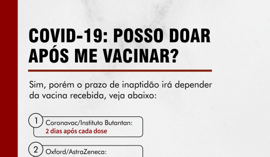
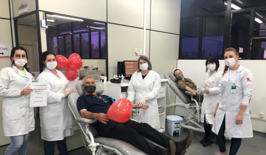
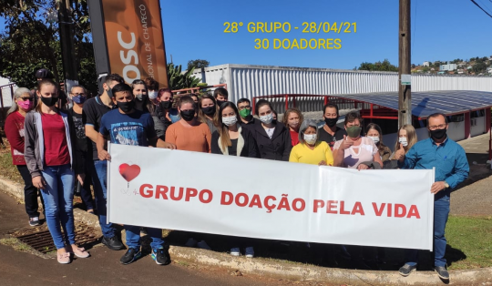

NOTÍCIAS
Doação de sangue e vacina covid-19

Última doação

Grupos de doação pela vida
O que é?
A doação é a retirada de aproximadamente 450 mL de sangue, através de inserção de uma agulha
em um dos braços. A coleta é feita por pessoal capacitado e sob supervisão de um médico ou
enfermeiro, garantindo o bem estar do doador. O ambiente deve ser limpo e confortável e o material
descartável. Todo o processo da doação de sangue levam em torno de 55 minutos. Doar sangue
não dói, nem prejudica a sua saúde.
Por que doar sangue?
O sangue é um tecido vivo que circula pelo corpo, essencial à vida. Todos os dias acontecem
centenas de acidentes, cirurgias e queimaduras violentas que exigem transfusão, assim como os
portadores de hemofilia, leucemia e anemias. Além disso, doar sangue é um ato simples, tranquilo
e seguro que não provoca risco ou prejuízo à saúde. Se cada pessoa saudável doasse sangue
espontaneamente pelo menos duas vezes ao ano, os Hemocentros teriam Hemocomponentes
suficiente para atender toda população. O sangue não tem substituto. Por isso a doação
espontânea e periódica é fundamental. Uma única doação de sangue pode salvar várias
vidas. Doar sangue é uma atitude necessária, de solidariedade, cidadania e amor.
Tipos de doação
O doador pode candidatar-se a doação de três formas:
- Doação Espontânea: uma atitude solidária com o único interesse de ajudar o próximo.
- Doação vinculada: feita vinculada a algum paciente.
- Doação autóloga: doar para si mesmo.
Quais são os tipos sanguíneos?
O sangue é classificado em grupos de acordo com a presença ou ausência de um antígeno na superfície
da hemácia. Os grupos sanguíneos mais importantes são ABO e Rh (positivo ou negativo). A incidência
destes grupos varia de acordo com etnia, porque trata-se de um fator hereditário. Percentualmente,
sua ocorrência na população catarinense é de aproximadamente:
O que é necessário para doar?
- Ter idade entre 18 e 69 anos, 11 meses e 29 dias;
- Doadores com idade de 16 e 17 anos de idade, são aceitos para doação mediante a presença e autorização
formal dos pais e/ou responsável legal;
- O limite de idade para primeira doação é de 60 anos;
- O candidato à doação deve estar em boas condições de saúde, sem feridas ou machucados no corpo;
- Pesar acima de 50 kg;
- Apresentar documento de identidade com foto, emitido por órgão oficial: RG., carteira profissional,
carteira de motorista, etc.
- Ter repousado bem na noite antes da doação;
- Evitar o jejum. Fazer refeições leves e não gordurosas, nas 3 horas que antecedem a doação;
- Evitar uso de bebidas alcoólicas nas últimas 12 horas;
- Evitar vir acompanhado com crianças, sem acompanhantes.
Após a Doação
- Não fumar por no mínimo duas horas;
- Nas 12 horas após a doação, não praticar exercícios físicos e atividades perigosas, como subir em
locais altos ou dirigir caminhão, ônibus em rodovias, etc.
- Permanecer no serviço hemoterápico após a doação por 15 minutos;
- Não dobrar o braço em que foi realizada a punção no dia da doação, para evitar sangramentos e hematomas;
- Retirar o curativo 4 horas após a doação.
Intervalos entre as doações
- Mulheres: Período de 90 dias/ 03 doações nos últimos 12 meses;
- Homens: Período de 60 dias/ 04 doações nos últimos 12 meses.